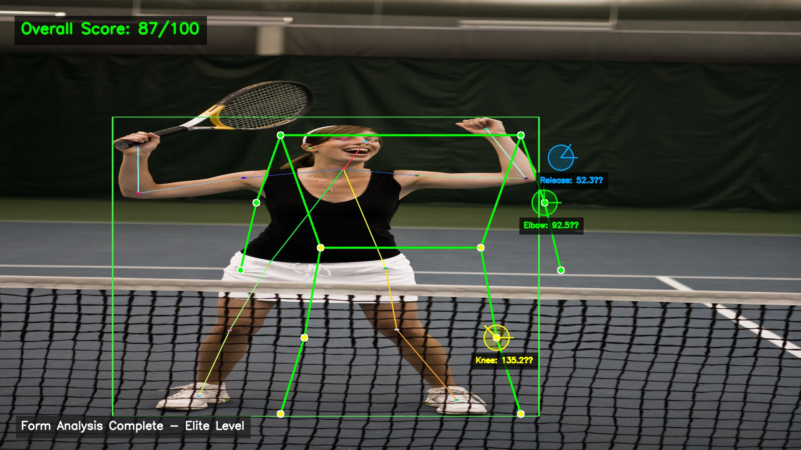
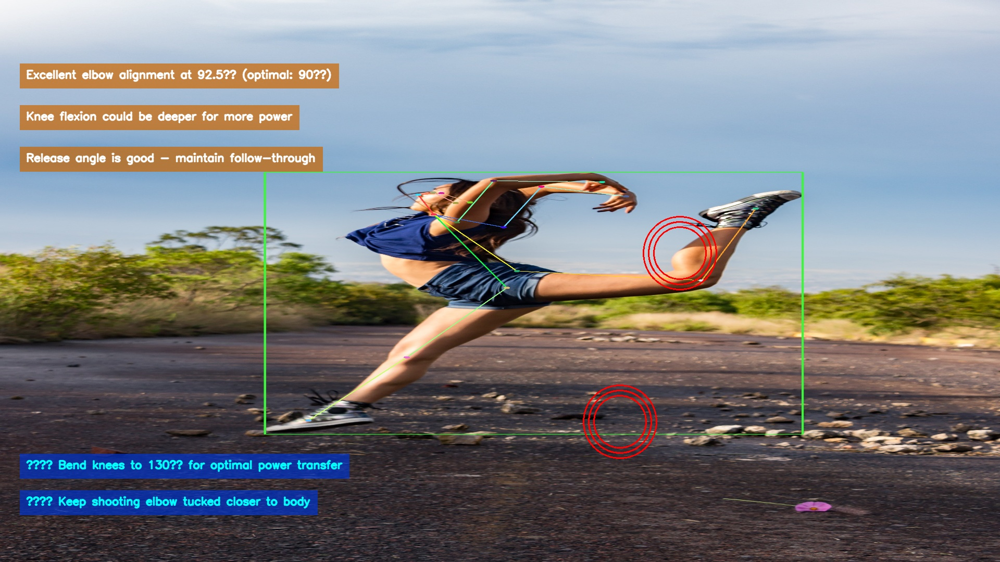
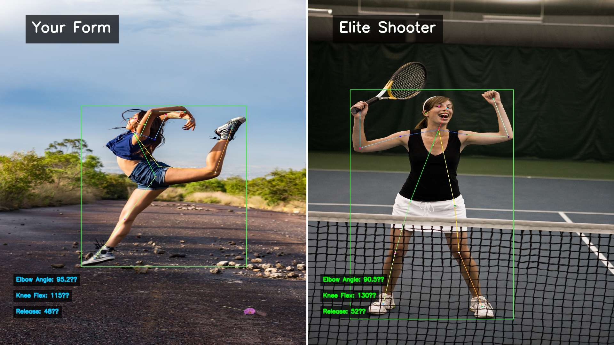

Visual Mockups - ShotStack Video Editing API Integration
3 Templates Real-Time Analysis Professional OverlaysThese are static mockups demonstrating what the ShotStack video templates will produce. In production, these overlays will be applied to actual basketball shooting videos with real-time pose detection data from RoboFlow. The templates are fully functional and ready to integrate with your analysis pipeline.
Shows skeleton overlay with angle measurements and score metrics
Displays coaching cues and improvement suggestions with error highlighting
Side-by-side comparison of user form vs elite shooter with metrics
